← All recipes · Drinks · Gin Tasting Journal
Gin Tasting Journal
Personal tasting notes and bottle photographs from the original notebook.
| Producer | Name | Location | Martini | Pic | Notes: | Where to buy |
|---|---|---|---|---|---|---|
| St. George | Botanivore | Alameda, CA | Yes |
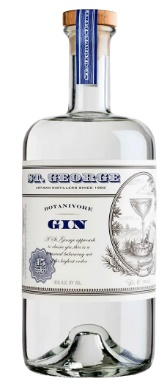 | A bit floral but also herby. Good for an olive martini. | |
| Monkey 47 | Schwarzwald Dry Gin | Germany | Yes |
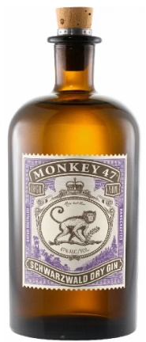 | Fruity and floral. Good for martinis. | Hyvee |
| Stockholms Branneri | Dry Gin | Sweden | yes |
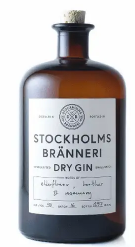 | Good for martinis | Total Wine |
| Bloom | London Dry Gin | England | maybe |
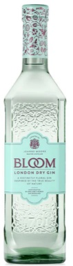 | Really good for gin & tonics | Woodmans |
| Glendalough | Irish Gin | Ireland | no |
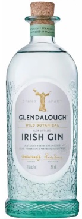 | too herby - treelike | |
| Hatch | Gin | Egg Harbor, WI | no |
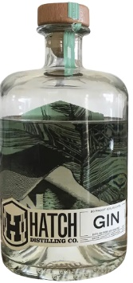 | ||
| Esme | Gin | France |
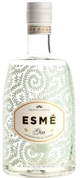 | |||
| Barr Hill | Gin | Vermont | yes |
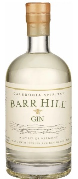 | Honey flavor is good with lemon | |
| Hayman's | Old Tom Gin | England | yes |
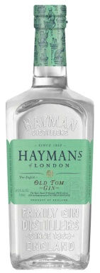 | Good in mixed martinis | Steves |
| Hayman's | England | yes |
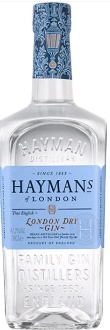 | Good in mixed martinis | ||
| Death's Door | Gin | Wisconsin | no |
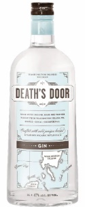 | Very herby, piney | |
| Gray Whale | Gin | California | yes |
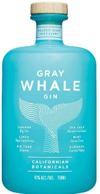 | good in mixed martinis | |
| Drumshanbo | Gunpowder Irish Gin | Ireland |
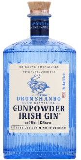 | |||
| Roku | Gin | Japan | yes |
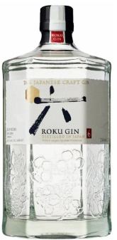 | good in mixed martinis | |
| Nikka | Coffey Gin | Japan | Yes | 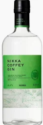 | a little fruity with yuzu/citrus and apple | |
| Dampfwerk | The Crane | Minnasodah | Yes |
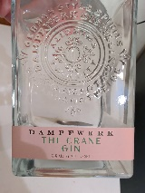 | Very floral, but also some herbs - makes a very interesting martini on its own | Steves |
| Sweet Gwendoline | France | Yes |
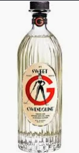 | Very floral, perfumy, makes a good martini, but is better diluted a little | ||
| Plymouth | Regular Strength | England | Yes |
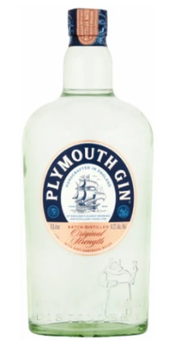 | Good in martini, especially with olives | |
| Le Cirque | France | meh |
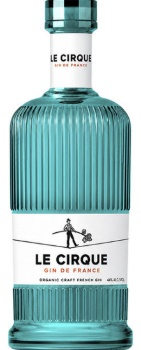 | a little peppery and lacking anything floral. spirulina gives it a little taste of the ocean. Could be a good martini with olives | ||
| Tenjaku | Japan | yes |
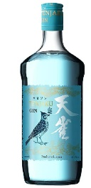 | very good for martinis. very subtle flavors. tiny hint of pepper. | HyVee | |